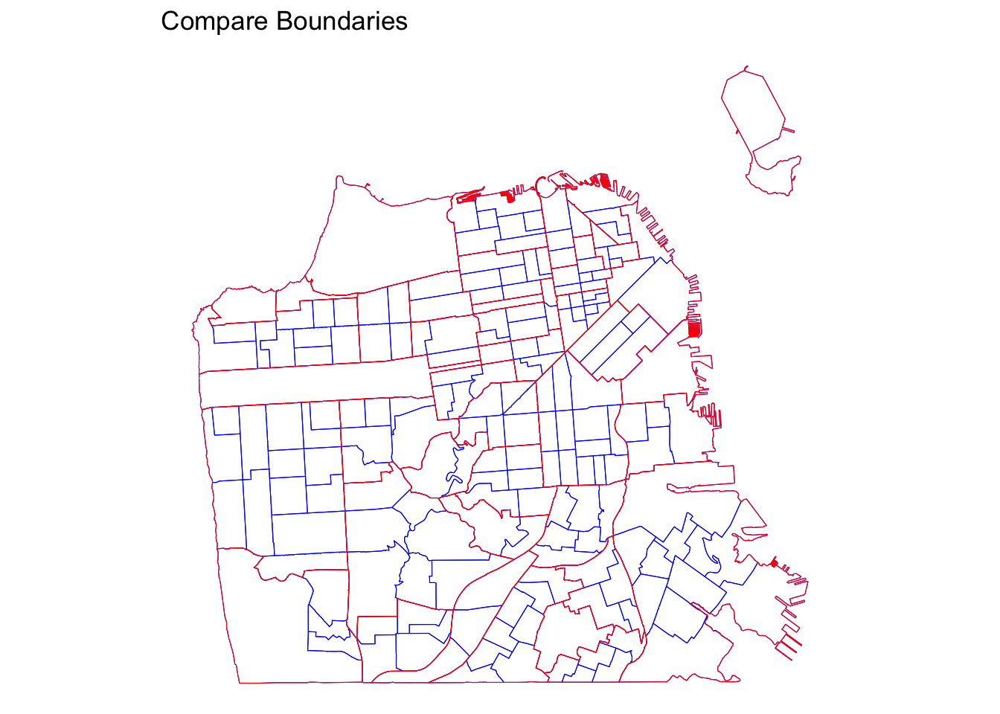
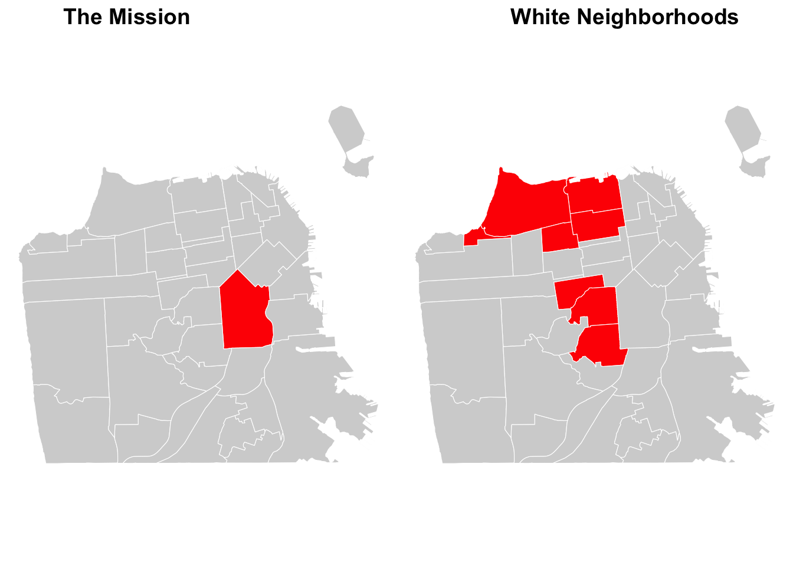
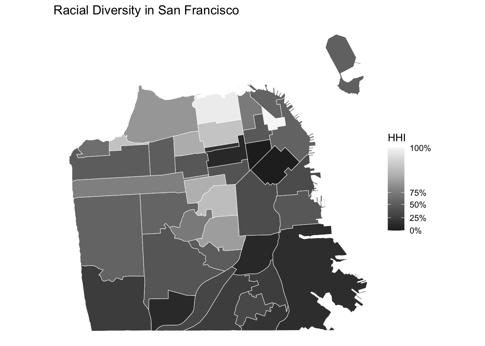

Chapter 2 Emplacing Demographic Data
In this chapter, we will discuss demographic data nested in places, which is often used in sociological research. Sociologists often study where people live and move to. Topics like migration, segregation, gentrification, integration/assimilation, and diversity/fractionalization can be studied using aggregated demographic data for a given geographic unit. As a first step, defining a geographic unit and boundary suitable for your analysis is critical.
2.1 Defining boundaries
Geographic boundaries can be defined and drawn at various levels, from regions to cities to neighborhoods. Territories are contested and (re)defined through social processes, therefore, it is important to clearly define and justify your choice of spatial boundary as a unit of analysis. Common topics studied by urban sociologists, for instance, often involves neighborhood dynamics. But what are neighborhoods? While government-defined census tracts are often used as a proxy for neighborhoods in quantitative social science research, some scholars choose to analyze other types of boundaries, such as “community areas” that are more meaningful to its residents.
THE CASE OF SAN FRANCISCO
Let’s demonstrate the importance of defining neighborhood boundaries using the case of San Francisco. San Francisco’s neighborhood names and boundaries have changed over time (1) and the current names and boundaries are often inconsistently perceived and administered (2). The image below, for example, compares the old and current neighborhood names and boundaries in San Francisco.
Source: SFGATE
In this tutorial, we will learn how to visualize San Francisco neighborhoods based on census tracts as well as the “Analysis Neighborhood” created by the city officials. Many US city governments provide their local data through Open Data websites, including San Francisco’s DataSF. Open their website and then click the “Geographic Locations & Boundaries” tab.

DataSF is an open data website provided by the city government of San Francisco
Under this tab, you will find the 2010 census tract and “Analysis Neighborhood” boundaries, among many other geographic data.
- Geographic boundaries data can come in various formats, like geojson, shapefiles, etc.
- In this tutorial, we use geojson files.
- Geographic boundaries are “polygons”
- We use sf package in R to handle spatial data.
Set up and import geojson files.
# First, you will have to set up by installing and calling the sf package.
library(sf)# Import neighborhood boundaries data (polygons)
sfnh <- st_read("data/sfnh.geojson") # for "Analysis Neighborhood" boundaries
sftrt <- st_read("data/sftrt_clean.geojson") # for census tractsYou can treat sf objects like data frames.
# Overview of variables
head(sfnh, 3)## Simple feature collection with 3 features and 1 field
## Geometry type: MULTIPOLYGON
## Dimension: XY
## Bounding box: xmin: -122.4761 ymin: 37.70833 xmax: -122.3983 ymax: 37.79037
## Geodetic CRS: WGS 84
## nhood geometry
## 1 Western Addition MULTIPOLYGON (((-122.4214 3...
## 2 West of Twin Peaks MULTIPOLYGON (((-122.461 37...
## 3 Visitacion Valley MULTIPOLYGON (((-122.4039 3...# Transform an sf object into a simple one data frame (without geometries)
sfnh_wo_geo <- st_drop_geometry(sfnh)
head(sfnh_wo_geo, 3)## nhood
## 1 Western Addition
## 2 West of Twin Peaks
## 3 Visitacion ValleyWe can compare how San Francisco neighborhood boundaries differ by mapping them next to each other. We use ggplot for mapping.
library(ggplot2)
# Displaying geometry for "analysis neighborhood" boundaries
sfnh_geo <- ggplot(data = sfnh) + # add a layer to the plot using spatial data
geom_sf(fill = "grey", # set the fill color of the spatial features
color = "white", # set the color of boundaries
size = 0.5) + # set the thickness of the boundary lines
theme_void() # apply no background
# Replicate the map using census tract boundaries
sftrt_geo <- ggplot(data = sftrt) +
geom_sf(fill = "grey", color = "white", size = 0.5) +
theme_void()
# Combining maps
ggpubr::ggarrange(sfnh_geo, sftrt_geo, ncol=2,
labels = c("Analysis Neighborhood",
"2010 Census Tract")
) # Overlaying boundaries
ggplot() +
geom_sf(data = sftrt, fill = NA, color = "blue", size = 0.2) +
geom_sf(data = sfnh, fill = NA, color = "red", size = 5) +
theme_void() +
labs(title = "Compare Boundaries")
What differences do you see between “Analysis Neighborhood” and “Census Tract”?
THINK AND SHARE
Let’s consider another example of contentious geographic unit: Europe. How will you define “Europe”? Should a map of Europe include Turkey, Ukraine, Lapland, or French Guyana? Where is the center of Europe?
Source: Lambert and Zanin (2020)
- Think of various geographic levels of analysis.
- What questions could we ask about them?
- How will you define their boundaries?
LEARN MORE
New York Times Upshot report did a great job exploring New York City’s neighborhood boundaries using crowd-sourced data. They asked residents of New York City to demarcate neighborhood boundaries and identify their names. It provides a fascinating window to understand the sticky yet malleable nature of geographic boundaries.
Documentation for Simple Features for R (sf package)
2.2 Joining attributes
Geographic boundaries alone don’t tell us much about what is social about them. Sociologists, and social scientists more broadly, often are interested in people in these places. Therefore, matching aggregated demographic data with the geographic boundaries is a crucial next step.
We can merge a sf object with a data frame containing demographic attributes using the merge() function.
# Import demographic attributes
sfdem <- read.csv("data/sfnh_dem.csv")
# Check common identifier
names(sfdem)## [1] "nhood" "pwhite" "pblack" "pasian" "phisp" "pwhite17" "pblack17"
## [8] "pasian17" "phisp17" # Yes, in both data sets, "nhood" exists.# Join attributes to geometry
sf_joined <- merge(
x = sfnh, # sf object; the returned object will be of the same type as x.
y = sfdem, # data frame
by.x = "nhood", # x identifier
by.y = "nhood", # y identifier
all.x = TRUE # keep all lines
)
# Validate geometries
sf_joined <- st_make_valid(sf_joined)Now, we can explore neighborhood-level characteristics.
library(tidyverse)
# Display the share of white population of neighborhoods
sf_joined %>%
select(nhood, pwhite)## Simple feature collection with 41 features and 2 fields
## Geometry type: MULTIPOLYGON
## Dimension: XY
## Bounding box: xmin: -122.5149 ymin: 37.70813 xmax: -122.357 ymax: 37.8333
## Geodetic CRS: WGS 84
## First 10 features:
## nhood pwhite geometry
## 1 Bayview Hunters Point 5.657989 MULTIPOLYGON (((-122.3816 3...
## 2 Bernal Heights 38.517951 MULTIPOLYGON (((-122.4036 3...
## 3 Castro/Upper Market 77.062002 MULTIPOLYGON (((-122.4263 3...
## 4 Chinatown 10.417827 MULTIPOLYGON (((-122.4067 3...
## 5 Excelsior 16.997611 MULTIPOLYGON (((-122.4246 3...
## 6 Financial District/South Beach 60.342295 MULTIPOLYGON (((-122.3875 3...
## 7 Glen Park 60.722712 MULTIPOLYGON (((-122.4474 3...
## 8 Golden Gate Park 66.423358 MULTIPOLYGON (((-122.4426 3...
## 9 Haight Ashbury 74.872127 MULTIPOLYGON (((-122.4321 3...
## 10 Hayes Valley 58.273722 MULTIPOLYGON (((-122.4207 3...# Display the neighborhood named "Mission"
sf_joined %>%
filter(nhood == "Mission")## Simple feature collection with 1 feature and 9 fields
## Geometry type: MULTIPOLYGON
## Dimension: XY
## Bounding box: xmin: -122.4269 ymin: 37.74783 xmax: -122.403 ymax: 37.77565
## Geodetic CRS: WGS 84
## nhood pwhite pblack pasian phisp pwhite17 pblack17 pasian17
## 1 Mission 32.5255 2.973325 11.01126 50.07308 41.09069 3.660031 14.46827
## phisp17 geometry
## 1 35.66786 MULTIPOLYGON (((-122.411 37...# Display the share of white population of "Mission"
sf_joined %>%
filter(nhood == "Mission") %>%
select(pwhite)## Simple feature collection with 1 feature and 1 field
## Geometry type: MULTIPOLYGON
## Dimension: XY
## Bounding box: xmin: -122.4269 ymin: 37.74783 xmax: -122.403 ymax: 37.77565
## Geodetic CRS: WGS 84
## pwhite geometry
## 1 32.5255 MULTIPOLYGON (((-122.411 37...In maps, we can highlight specific neighborhoods by creating conditions.
# Create conditions for highlights
sf_joined <- sf_joined %>%
mutate(
highlight_mission = ifelse(nhood == "Mission", "Highlighted", "Other"), # highlight the Mission
highlight_white = ifelse(pwhite > 70, "Highlighted", "Other") # highlight white neighborhoods
)
# Create highlighted maps
mission_map <- ggplot(data = sf_joined) +
geom_sf(aes(fill = highlight_mission), # specify a variable to fill
color = "white") +
scale_fill_manual(values = c("Highlighted" = "red", "Other" = "light grey")) + # specify colors to fill
theme_minimal() +
theme_void() +
theme(legend.position = "none") # remove legend
white_map <- ggplot(data = sf_joined) +
geom_sf(aes(fill = highlight_white),
color = "white") +
scale_fill_manual(values = c("Highlighted" = "red", "Other" = "light grey")) +
theme_minimal() +
theme_void() +
theme(legend.position = "none")
# Combining maps
ggpubr::ggarrange(mission_map, white_map, ncol=2,
labels = c("The Mission",
"White Neighborhoods")
) 
# Export your joined sf object as a geojson file
st_write(sf_joined, "processed-data/sfnh_dem_joined.geojson",
driver = "GeoJSON",
delete_dsn = TRUE # overwrite the existing file
)## Deleting source `processed-data/sfnh_dem_joined.geojson' using driver `GeoJSON'
## Writing layer `sfnh_dem_joined' to data source
## `processed-data/sfnh_dem_joined.geojson' using driver `GeoJSON'
## Writing 41 features with 11 fields and geometry type Multi Polygon.THINK AND SHARE
Below, you see two maps, each representing Chicago ans Seattle.

Source: Hwang (2015).doi: 10.1177/0002716215579823
- What are the geographic boundaries used in this figure?
- What attribute is displayed in the map?
- Is this attribute quantitative or qualitative?
Compare this map to the other map of Chicago below:
Source: Bader (2011). doi: 10.1111/j.1540-6040.2011.01368.x
Explore Open Data website for City of Paris.
- Can you find boundaries data?
- What kind of data do you find interesting? Demographic? Cultural?
- What potential research questions could you ask?
2.3 Data visualization
By joining attributes with spatial boundaries, now we can map demographic patterns. But, first of all, what is a map? A map is a simplified and codified image of geographical space, representing its characteristics and/or its organization. It is the result of a creative action and of the choices made by its author (Lambert and Zanin, 2000; p.4).

Source: Lambert and Zanin (2020)
Lambert and Zanin (2020) classify maps into two types: Topographic maps are maps that mainly show results of direct observation, such as water courses and human constructions. These maps represent concrete elements that are durably established on a portion of terrestrial space at a given time.
Thematic maps are maps on which localizable qualitative or quantitative phenomena of all kinds are represented. Information is represented according to the rules of graphic semiology. These maps are designed, laid out, and “staged” to produce an intelligible image of the geographical phenomenon at hand.
We will learn how to create thematic maps.
Source: Lambert and Zanin (2020)
When it comes to making thematic maps, it is important to consider what type of variable you intend to display (think of your attribute data). We will learn about two different types of maps: Choropleth map for quantitative variables and Typology map for qualitative variables.
2.3.1 Choropleth map
A choropleth map is useful for visualizing quantitative variables. This type of map displays color corresponding with an aggregated variable for a given geographic unit, such as population density or per-capital income.
EXAMPLE: MEASURING AND MAPPING DIVERSITY
In social science research, scholars often use the Herfindahl-Hirschman Index (HHI) as a measure for diversity. It is an economic index, but the formula is also used in ecology (called the Simpson diversity index), as well as in demographic contexts. The formula is:
\[ HHI = \sum_{i=1}^{N} (MS_i)^2 \] Where \(MS_i\) is the market share of firm \(i\) in the market, and \(N\) is the number of firms. The lower the HHI, the more competition in the market (many firms with relatively equal market shares). Reversely, the higher the HHI, the less competition in the market, suggesting monopoly.
In demographic research, sociologists commonly use the HHI to measure racial diversity of neighborhoods. Instead of market shares of firms in a market, we use the shares of racial groups in a neighborhood.
For example, in a neighborhood with 4 racial groups each representing 25%, the HHI would be:
\[ 0.25^2 + 0.25^2 + 0.25^2 + 0.25^2 = 0.25 \]
Compared this to another neighborhood with 2 racial groups – one representing 80% and the other representing 20%. The HHI would be:
\[ 0.80^2 + 0.20^2 = 0.68 \]
The first neighborhood with the HHI of 25% is more diverse compared to the second neighborhood with the HHI of 68%.
We can create this diversity measure using the variables we have.
# Create the HHI
sf_joined <- sf_joined %>%
mutate(diversity = (pwhite^2 + pblack^2 + phisp^2 + pasian^2)/100)
# Check
sf_joined %>%
select(diversity)## Simple feature collection with 41 features and 1 field
## Geometry type: MULTIPOLYGON
## Dimension: XY
## Bounding box: xmin: -122.5149 ymin: 37.70813 xmax: -122.357 ymax: 37.8333
## Geodetic CRS: WGS 84
## First 10 features:
## diversity geometry
## 1 30.41952 MULTIPOLYGON (((-122.3816 3...
## 2 29.24377 MULTIPOLYGON (((-122.4036 3...
## 3 60.80993 MULTIPOLYGON (((-122.4263 3...
## 4 72.94796 MULTIPOLYGON (((-122.4067 3...
## 5 33.48204 MULTIPOLYGON (((-122.4246 3...
## 6 42.47888 MULTIPOLYGON (((-122.3875 3...
## 7 41.08415 MULTIPOLYGON (((-122.4474 3...
## 8 48.51617 MULTIPOLYGON (((-122.4426 3...
## 9 57.51691 MULTIPOLYGON (((-122.4321 3...
## 10 39.00489 MULTIPOLYGON (((-122.4207 3...To create a choropleth map, we first have to check the statistical distribution of the variable.
hist(sf_joined$diversity)
There are various methods to determine how you classify colors. The most common methods are quantile binning, natural breaks (jenks), standard deviation, and custom breaks (defined by the researcher). Below, I use the quantile binning and create a map displaying how diverse/homogeneous San Francisco neighborhoods are.
# Create a choropleth map visualizing the diversity variable
ggplot() +
geom_sf(data = sf_joined, # specify the source of spatial data
aes(fill = diversity), # add a layer to use "diversity" to fill colors
size = 0.2,
color = "white") +
scale_fill_distiller(type="seq", # fill in sequential colors
palette = "Greys",
breaks = quantile(sf_joined$diversity),
direction = -1, # 1 for low (light) to high (dark), -1 for reverse
) +
theme_void() +
labs(fill = "HHI", # add a label for legend
title = "Racial Diversity in San Francisco" # figure title
) 
- What are the least diverse neighborhoods?
- What are the most diverse neighborhoods?
For those who are not familair with San Francisco neighborhoods, we can add labels displaying neighborhood names corresponding to neighborhood boundaries.
# Add labels to the map
ggplot() +
geom_sf(data = sf_joined,
aes(fill = diversity),
size = 0.2,
color = "white") +
scale_fill_distiller(type="seq",
palette = "Greys",
breaks = quantile(sf_joined$diversity),
direction = -1,
) +
geom_sf_label(data = sf_joined,
aes(label = nhood), # add a layer of labels using the nhood variable
size = 1.5, # size of the label text
color = "black", # color of the text
fill = "white", # background fill color
label.padding = unit(0.1, "lines"), # padding around the text
label.size = 0, # thickness of the border around the label
alpha = 0.5, # set transparency of the background
check_overlap = TRUE) + # suppress overlapping texts
theme_void() +
labs(fill = "HHI", # add a label for legend
title = "Racial Diversity in San Francisco" # figure title
) 2.3.2 Typology map
A typology map is suitable for qualitative variables that consist distinct and meaningful categories. We will create a gentrification measure to demonstrate a use case for typology map. Gentrification is a phenomenon that we measure over space and time. While there are multiple ways to define and measure gentrification, for the purposes of this tutorial, we will conceptualize gentrification as a neighborhood-level socioeconomic transformation comprised of both an influx of middle-and upper-class residents and an increase in housing prices in previously low-income, urban neighborhoods.
Our measure of gentrification is calculated at the census tract level from 2000 to 2020, so that we can examine how the socioeconomic composition of neighborhoods in San Francisco changes over time. The four variables listed below are used in our categorical measure of gentrification:
- Median household income (in 2020 Dollars)
- Percent of college-educated residents
- Median home value (in 2020 Dollars)
- Median gross rent (in 2020 Dollars)
The first step in computing the gentrification measure is determining whether or not a tract is eligible to gentrify (i.e., Gentrifiable). Generally, researchers consider tracts eligible to gentrify if they are relatively low-income neighborhoods such that they could undergo the revitalization that characterizes gentrification. We will operationalize eligibility to gentrify in a binary fashion using the median household income.
Not Gentrifiable: Census tracts had a median household income above the city-wide median household income at the start of the period.
Gentrifiable: Census tracts had a median household income below the city-wide median household income at the start of the period.
Next, among the census tracts that were Gentrifiable, we must determine if they were gentrifying over time or not. To classify the gentrifiable tracts as gentrifying or not gentrifying, we will need to calculate how much socioeconomic change and housing value change the tract experienced over the decade and compare the rate of change to the rate in the city.
Gentrifying: Gentrifiable census tracts that had the socioeconomic status of their residents (i.e., % college graduates OR median household income) grow faster than the city wide-median AND the home values (median home value OR median gross rent value) grow faster than the city-wide median over the decade period.
Not Gentrifying: Gentrifiable census tracts that did NOT experience growth in the socioeconomic status of their residents AND their home values at a rate higher than the city-wide median values over the decade period.
This measurement strategy results in a three-category gentrification measure - Not Gentrifiable, Gentrifying, and Not Gentrifying. With these three categories we can make a typology map of census tracts in San Francisco.
# Import demographic attributes for census tracts
sftrt_dem <- read.csv("data/sftrt_dem.csv")
# Explore the data
head(sftrt_dem, 5)## trt10 tpop pyoung pcol minc mhval mrent pwht pblk pasian phisp
## 1 10100 2879 36.99 55.63 76037.34 801814.8 1544.629 57.55 5.52 26.02 7.26
## 2 10200 4288 36.92 70.51 122888.48 1206373.1 1808.258 83.65 0.72 9.82 3.78
## 3 10300 4092 30.99 59.79 100281.00 927944.9 1671.979 58.04 0.56 35.04 3.42
## 4 10400 4859 32.62 61.38 108566.69 1057897.0 1645.376 62.85 0.62 31.34 3.42
## 5 10500 2217 16.78 68.54 113515.23 791430.7 2258.772 75.33 1.89 17.14 3.20
## tpop17 pyoung17 pcol17 minc17 mhval17 mrent17 pwht17 pblk17 pasian17 phisp17
## 1 3889 34.89 52.96 62414 1145800 1770 39.01 6.07 39.44 12.21
## 2 4167 33.79 85.81 151453 1305300 2471 80.71 2.02 12.07 3.26
## 3 4359 37.49 72.79 150972 1545800 2206 59.44 0.00 29.04 9.34
## 4 4536 30.69 74.11 130732 1519800 2220 62.94 0.20 22.57 7.58
## 5 2779 24.72 78.56 135300 1525000 2270 49.80 9.07 23.68 7.56
## gentcat
## 1 non-gentrifying
## 2 non-gentrifiable
## 3 non-gentrifiable
## 4 non-gentrifiable
## 5 non-gentrifiable# Explore the geometry
head(sftrt, 5)## Simple feature collection with 5 features and 2 fields
## Geometry type: MULTIPOLYGON
## Dimension: XY
## Bounding box: xmin: -122.4438 ymin: 37.77271 xmax: -122.4234 ymax: 37.7887
## Geodetic CRS: WGS 84
## nhood tractce10 geometry
## 1 Hayes Valley 016400 MULTIPOLYGON (((-122.4325 3...
## 2 Western Addition 016100 MULTIPOLYGON (((-122.4235 3...
## 3 Western Addition 015900 MULTIPOLYGON (((-122.4247 3...
## 4 Japantown 015500 MULTIPOLYGON (((-122.4247 3...
## 5 Pacific Heights 015300 MULTIPOLYGON (((-122.4349 3...# Check if it has a common identifier with sftrt
head(sftrt_dem$trt10)## [1] 10100 10200 10300 10400 10500 10600class(sftrt_dem$trt10)## [1] "integer"head(sftrt$tractce10)## [1] "016400" "016100" "015900" "015500" "015300" "015100"class(sftrt$tractce10)## [1] "character"# Fill with leading zeros and convert to string
sftrt_dem <- sftrt_dem %>%
mutate(tractce10 = as.character(sprintf("%06d", trt10)))
# Join demographic data with geometric boundaries
sftrt_joined <- merge(
x = sftrt, # sf object
y = sftrt_dem, # data frame
by.x = "tractce10", # x identifier
by.y = "tractce10", # y identifier
all.x = TRUE, # keep all lines
)
# Export your joined sf object as a geojson file
st_write(sftrt_joined, "processed-data/sftrt_dem_joined.geojson",
driver = "GeoJSON",
delete_dsn = TRUE # overwrite the existing file
)## Deleting source `processed-data/sftrt_dem_joined.geojson' using driver `GeoJSON'
## Writing layer `sftrt_dem_joined' to data source
## `processed-data/sftrt_dem_joined.geojson' using driver `GeoJSON'
## Writing 195 features with 24 fields and geometry type Multi Polygon.# Check your variable of interest
print(unique(sftrt_joined$gentcat))## [1] "non-gentrifying" "non-gentrifiable" "gentrifying"# Create a typology map
ggplot(data = sftrt_joined) +
geom_sf(aes(fill = gentcat),
size = 0.02,
color = "white") +
scale_fill_manual(values = c("non-gentrifiable" = "light grey",
"gentrifying" = "pink",
"non-gentrifying" = "black")) + # specify colors corresponding to each category
theme_void() +
labs(fill = "Gentrification Category",
title = "Gentrification in San Francisco"
)CODING EXERCISE
- Create a qualitative variable with three categories: high-income, middle-income, and low-income.
- Create a typology map using this variable (“nh-ses”).
LEARN MORE
For more detailed guidance as to how to choose a discretization method for choropleth map, you can see the slides made by Nicholas Lambert and his colleagues.
Steele and her colleagues (2022) published a review article, summerizing existing quantitative approaches to measuring ethnic diversity. HHI (also referred to as ELF) is included as one of the most common measurements.
Brown-Saracino (2017) reviews the concept and measurement of gentrification in contemporary literature in a review article.